01 · fundamental_analyst
基本面研究员
FUND · $
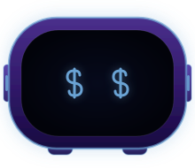
Accent #6ba3d4 · Symbol $
14 角色 + PM 3 状态 = 16 个独立 SVG 文件，已写入 claw42/design-source/c-line-ui-uplift-v1/avatars/，按 actual id 命名。每个 SVG 自包含、220×190 viewBox、纯 vector、可直接被 dispatch SVG 体系 import。

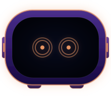
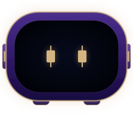
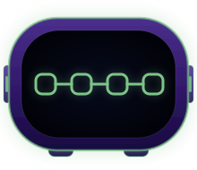
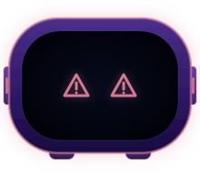
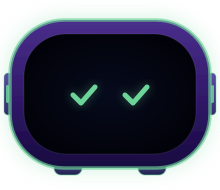
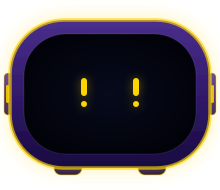
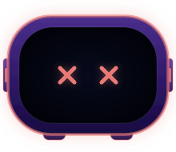
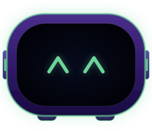
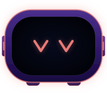
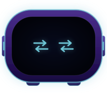
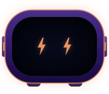
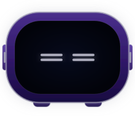
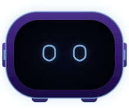
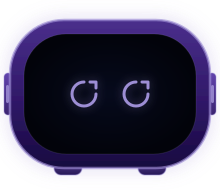